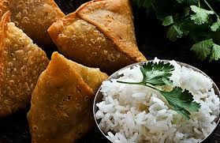
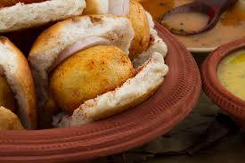
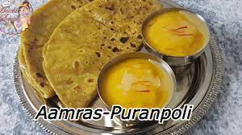
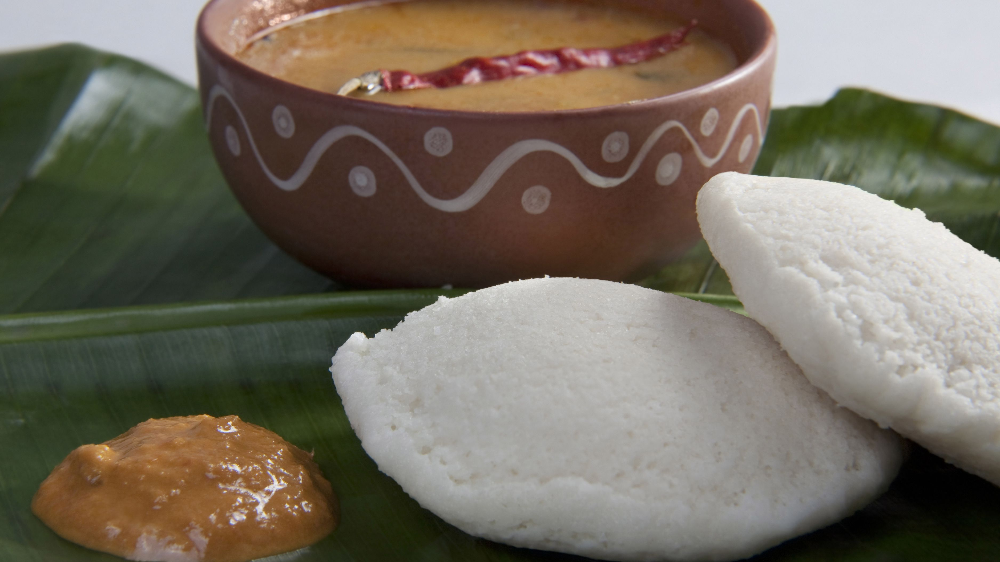
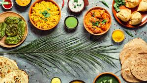

Start With The Spices And Other Supplies
Get Familiar With Indian Cooking Terms
Understand The Basic Patterns Of Most Indian Recipes.
Choose Your Favorite Indian Dish And Start Watching YouTube Videos!
Experiment With One Dish Until You Master It – Then Choose A New One!
Indian Food Culture Indian food is different from rest of the world not only in taste but also in cooking methods. It reflects
-
-
-
-
-
-
-
-
-
-
-
-
One of the special dish Maharashtrian Puranpoli
Ingredients of Puran PoliFor mixture:1 cup Chana Dal (washed)3 cups Water1 cup Sugar1 tsp Cardamom PowderNutmeg, gratedFor making dough:2 cups Maida1 tsp Salt2 tbsp Ghee1 cup Water
PURANPOLI RECIEP Video Link!One of the special dish Panir Sabaji
Ingredients You Need Ripe red juicy tomatoes,Cashews,Cream,Butter,Paneer,Spices & herbs
PANIR SABAJI RECIEP Video link!One of the special dish Panipuri reciep
2 to 3 potatoes – medium-sized ▢1 onion – small to medium-sized, optional ▢1 to 1.5 tablespoons chopped coriander leaves (cilantro) ▢1 teaspoon roasted cumin powder ▢1 teaspoon chaat masala powder ▢¼ teaspoon red chili powder – optional ▢black salt or regular salt or pink salt, as required
PANIPURI RECIEP Video link!One of the special South Indian dish Dosa
Common Dosa Ingredient Made up of rice, lentils, potato, methi (fenugreek), and curry leaves. Served with chutneys and sambar.
DOSA RECIEP Video link!SAMOSA RECIEP! VADAPAV RECIEP! CHAPATI RECIEP! ROTI RECIEP!
    